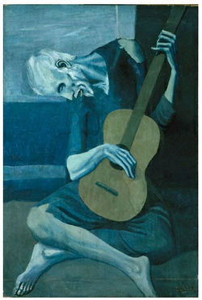

PABLO PICASSO
BIOGRAFIA
Pablo Diego José Francisco de Paula Juan Nepomuceno Cipriano de la Santísima Trinidad Ruiz Picasso (según su certificado de nacimiento) o Pablo Diego José Francisco de Paula Juan Nepomuceno María de los Remedios Crispiniano de la Santísima Trinidad Ruiz y Picasso (según su partida de bautismo),6a fue el primer hijo de José Ruiz y Blasco y María Picasso López. Nació el 25 de octubre de 1881 en Málaga (España), en el seno de una familia burguesa. Picasso tuvo dos hermanas, Dolores (1884-1958) y Concepción (1887-1895). Su bisabuelo materno, Tommaso Picasso (nacido en 1787), era originario de la localidad de Sori en Génova, Italia, y se trasladó a España alrededor del 1807.7 De su padre se sabe que quiso ser artista y fue profesor de dibujo en la Real Academia de Bellas Artes de San Telmo. De la madre se conoce poco; al parecer era de una personalidad más fuerte que la de su marido, y Picasso tuvo siempre hacia ella mayor respeto y ternura, lo que algunos creen ver en el retrato que le dibujó en 1923.8 Pablo empezó a pintar desde temprana edad; en 1889, a los ocho años, tras una corrida de toros y bajo la dirección de su padre pintó El picador amarillo,9 primera pintura al óleo1011 de la que siempre se negó a separarse.
5 PINTURAS FAVORITAS
GUERNICA
RESEÑA
Guernica es un famoso cuadro de Pablo Picasso, pintado entre los meses de mayo y junio de 1937, cuyo título alude al bombardeo de Guernica, ocurrido el 26 de abril de dicho año, durante la guerra civil española.
LAS SEÑORITAS DE AVIGNON
RESEÑA
Las señoritas de la calle de Avinyó, es un cuadro del pintor español Pablo Picasso pintado en 1907 al óleo sobre lienzo y sus medidas son 243,9 x 233,7 cm. Se conserva en el Museo de Arte Moderno de Nueva York

LA MUJER QUE LLORA
RESEÑA
La mujer que llora es un óleo sobre lienzo pintado por Pablo Picasso en Francia en 1937. Picasso estaba intrigado con el tema y revisó el tema varias veces ese año. Esta pintura, creada el 26 de octubre de 1937, fue la más elaborada de la serie.

EL VIEJO GUITARRISTA CIEGO
RESEÑA
El viejo guitarrista ciego es un cuadro realizado por el pintor cubista malagueño Pablo Picasso. Este cuadro fue pintado en 1903 mediante la técnica de óleo sobre lienzo, y sus medidas son de 121cm de alto x 92cm de ancho. En la actualidad se encuentra en el Instituto de Arte de Chicago, Estados Unidos.
EL SUEÑO
RESEÑA
El sueño es un cuadro del pintor español Pablo Picasso pintado en 1932. Está hecho mediante la técnica del óleo sobre lienzo y es de estilo cubista.